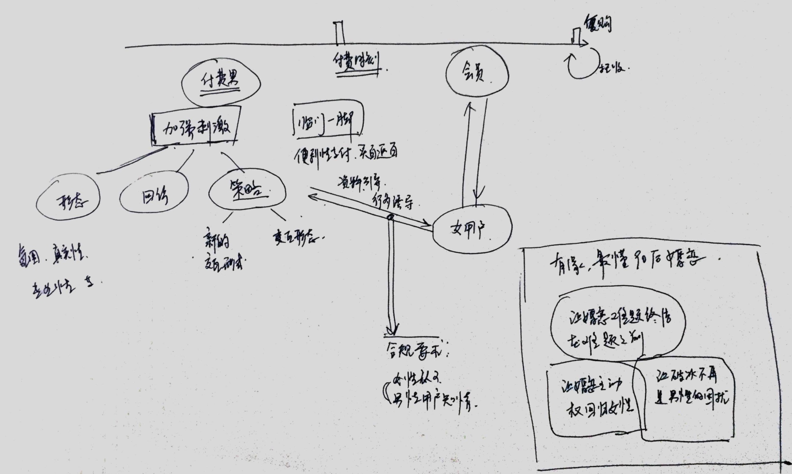

产品战略

产品的三个层次
- 基础产品定位 （大众，低成本，售卖可能性）
- 产品结构 （体验历程， 还有match.com给会员陆续展示的机会 ）
- 交互&表现&支付
第一，第二 是没有问题的，没有竞品可以替代
目前的主要问题，还是策略层的交互形式粗暴单一（没有代入感，循序渐进），真实性。
如何加强信赖感、真实感
产品思考的初步结论
从周六的接受了产品方向的任务以来，一直觉得重担在身，压力山大。本周主要是对有缘网产品进行体验，思考和各种讨论，不知道理解是否正确，写出来，让大家讨论讨论，拍拍砖。
1、 从产品的基础的『大众，低成本，售卖可能性』定位，这个已经达成共识，目前在市场上是领先的；
2、 产品结构，即提供给消费者的体验历程，通过策略引导逐步加强刺激诱发想象空间，推动用户越过付费门槛成为会员，然后进行实质性的交友过程。这是个蛮传统的商业结构，友缘策略应用能抓住荷尔蒙用户最核心的痒痒肉，如果能合规，这种策略方式在市场中也是最先进的。
3、交互表现层，这一块是被吐槽最多，产品表现脱离主流趋势，用户不能形成第一眼信赖；交互形式没有代入感，粗暴单一无下限（在信的数量、深度、内容上不断下猛药），稍有智商会质疑真实性，最终只搞定『智商最傻需求最强』的用户。用户被市场不断教育，产品的停滞不前，核心用户群已经在渐渐远离，这个是我认为的产品最核心短板。
如果1和2都不是主要问题，对3的改进本质就是营销升级，远炜提供了一个模型，通过对用户的分类进行不同的营销策略，形成完整的营销升级的思考，如下：
| 用户 | 需求 | 策略 | 方向 | 项目 |
|---|---|---|---|---|
| 傻 | 强 | 忠诚客户，保留 | 继续深化策略 | 富媒体，涨价，唤醒进行多次托收 |
| 傻 | 弱 | 摇摆客户，唤醒 | 降低门槛，付费拉长 | 低成本体验，召回，临门一脚的促销，托收跟上 |
| 奸 | 强 | 新兴客户，吸引 | 提升信赖感，策略真实性 | 产品力提升，交互方式升级，付费前用户的诱饵质量 |
| 奸 | 弱 | 放弃 |
压力山大，不知道是否方向正确，希望大家能就这个发表一下各自的看法。
至公开信
2016年第一季度马上就要结束了，在第一季度商业化中心基本完成K值提升的KPI指标，有的部门甚至超额完成目标，在第一季度大家的努力和成果还是值得肯定的，但随着市场竞争的加剧以及渠道的快速变化，产品部门原有的工作流程、方式和方法论，已经不能及时的响应商务部门的需求，不能够适应市场的快速变化了，产品部门的工作成果未能体现出对公司收入、毛利的提升效果，因此明确产品如何才能跟随商务及市场变化和需求的节奏、紧跟时代潮流，真正成为公司建立核心市场竞争力的有力推手，是商业化中心亟需思考和明确的问题，这就需要找到打开产品空间的思路、方式，明确产品方向和后续规划。
大家可以结合下面的几个问题进行思考，下面的问题只是例子，大家可以不局限于自己所做的工作，可以从不同的视角或角色进行思考，可以从产品的角度、产品经理的角度，从商业化中心或公司业务发展宏观的层面等等进行思考和设想。
思考:
1、自己现在正在做的事项，能够为公司在产品方面的进一步发展，拓展更大的发展空间吗？为什么呢？
2、如果你就是公司产品的负责人，那么对下面的问题如何理解和解决呢？
A、公司的产品解决了用户的哪些痛点，我们的产品对于用户的价值是什么？本质是什么？我们满足用户的需求了吗？
B、目前公司产品的问题在哪里？是什么束缚了公司产品的发展，当前我们的瓶颈在哪里？那么我们该如何提升产品的竞争力，适应市场的快速变化呢？
C、如果要让公司的产品实现质的飞跃，你会从哪几个方向入手呢？为什么？
